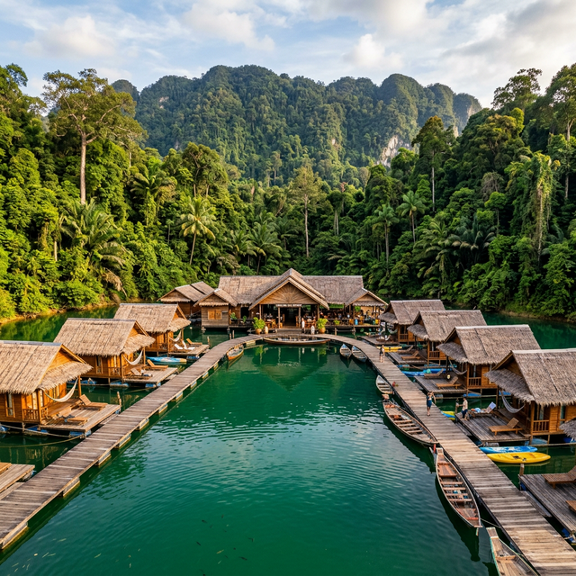
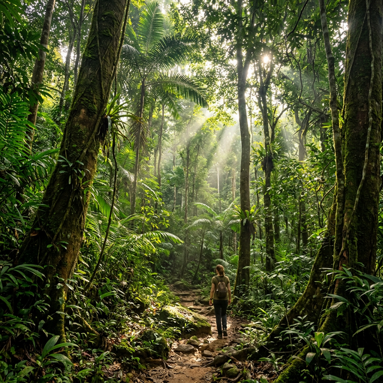
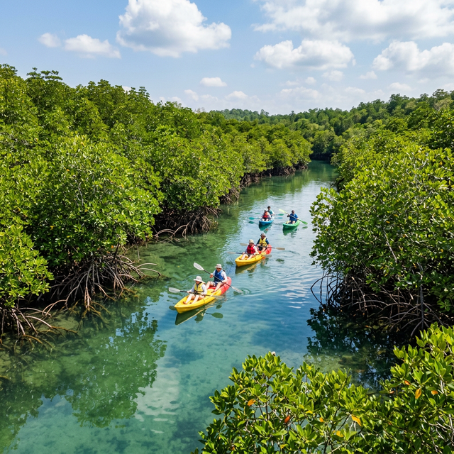

Discover the breathtaking megadiversity of Malaysia, carefully categorized by its natural habitats.

Estimated to be over 130 million years old, this sprawling ancient forest is the green heart of Peninsular Malaysia, teeming with rare flora and fauna.

A pristine stronghold for endangered species like the Bornean orangutan and pygmy elephant, offering unparalleled access to deep ecology research zones in Sabah.

A massive, uninterrupted forest complex in northern Malaysia known for its large mammal populations, including the elusive Malayan tiger.
Sarawak's oldest national park, offering a spectacular mix of rainforest, abundant wildlife (including proboscis monkeys), jungles streams, and secluded beaches.
The highest peak between the Himalayas and New Guinea. This UNESCO World Heritage site is a botanical paradise, famous for immense pitcher plants.
Known for its cool climate, rolling tea plantations, and the mysterious Mossy Forest. A haven for specialized montane flora and fauna.
A spectacular UNESCO site featuring immense limestone pinnacles and some of the largest, most intricate cave systems on the planet.
Globally renowned as one of the best dive sites in the world, featuring massive schools of barracuda, bumphead parrotfish, and nesting sea turtles.
Famous for its crystal clear waters and white sandy beaches. It serves as a critical turtle conservation sanctuary on the East Coast.
A laid-back paradise ideal for snorkeling right off the beach, offering regular sightings of blacktip reef sharks and sea turtles.
A densely forested island surrounded by marine parks. It balances jungle trekking interior with spectacular coastal reefs.
A stunning blend of limestone karst hills and intricate mangrove estuaries. Home to Brahminy Kites and macaques.
Recognized globally as one of the best-managed mangrove ecosystems, vital for coastal protection and local sustainable forestry.
Malaysia's second longest river. Its lower basin is a critical sanctuary for Borneo's highest concentration of wildlife.
One of the largest firefly colonies in the world. Thousands of fireflies gather in the berembang trees along the riverbank at dusk.